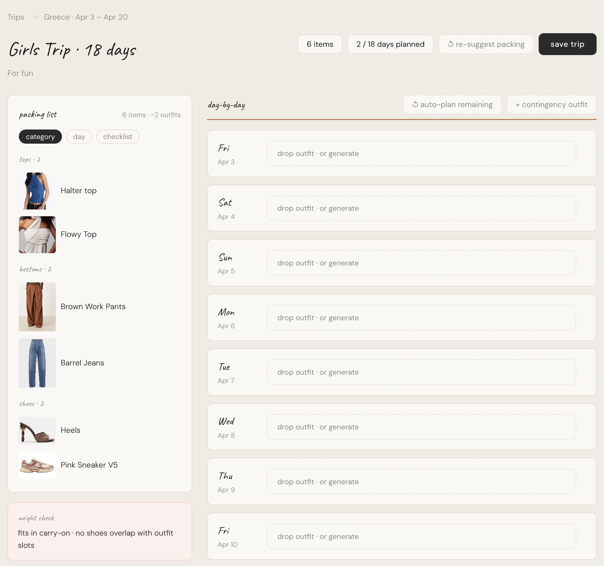

Decision 1
Start with a trip.
- What I observed
- A trip creates a deadline and a reason to finish adding clothes.
- What I chose
- Assign an outfit to each day and the app builds a packing list by category, day or checklist, then estimates whether it will fit in a carry-on.
- Tradeoff
- Everyday outfit planning comes second.
- What I'll measure
- Trip-plan completion and repeat use for future trips.
